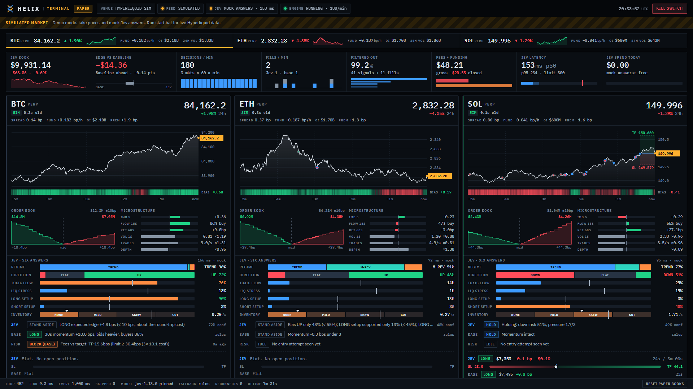
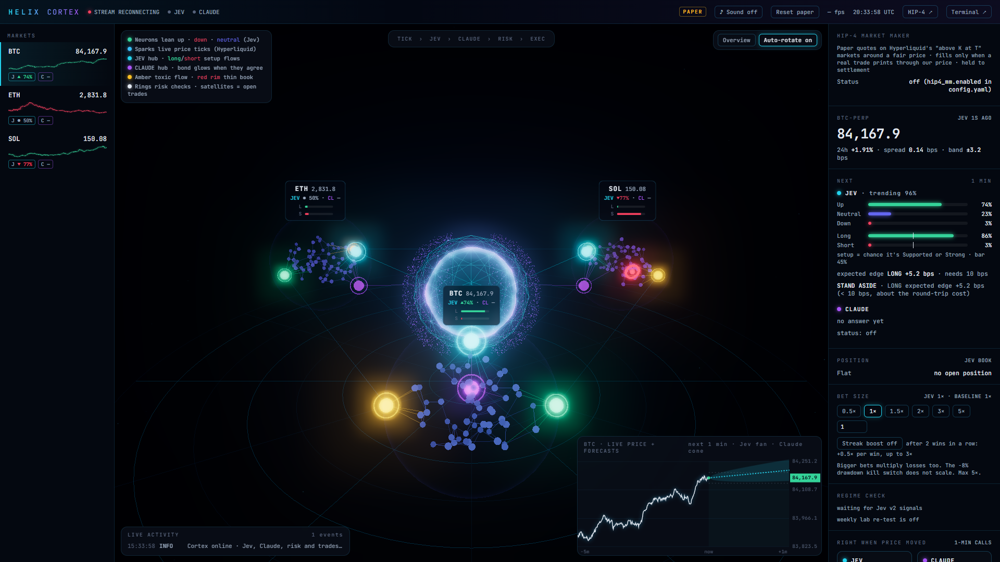
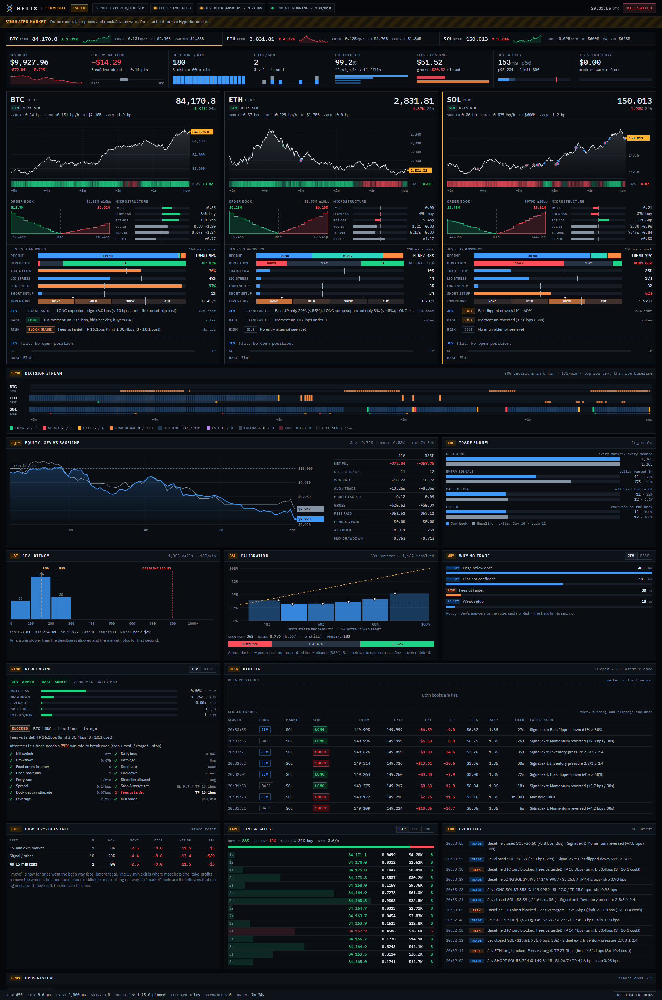

HELIX is a trading bot and research terminal for Hyperliquid. It reads live order books, weighs each market, and shows exactly why it traded or why it stayed out. It runs on paper until you decide otherwise.

A volatility model prices contracts such as "BTC above K at 19:00" and takes quotes that sit far enough from fair value.
A second paper book trades simple rules on the same data, so you can see whether the AI adds anything at all.
Record every book and trade, then replay strategies at realistic latencies, with a lab for testing variants at zero risk.
Kill switch, loss limits, and a go-live gate. Live trading is off by default and needs your own agent wallet, which cannot withdraw.


git clone https://github.com/Neo111Neo/helix-trading-bot cd helix-trading-bot && python -m venv .venv && .venv/bin/pip install -r requirements.txt .venv/bin/python run.py --demo --config config.demo.yaml
On Windows, run setup.bat, then demo.bat.
Experimental software, not financial advice. No profitability is claimed: the perpetuals strategies tested here lost money after costs, and paper results overstate live ones. The optional live pilot can lose real money. Check that these markets are legal where you live. HELIX is not affiliated with Hyperliquid, TypeSafe AI or Anthropic.